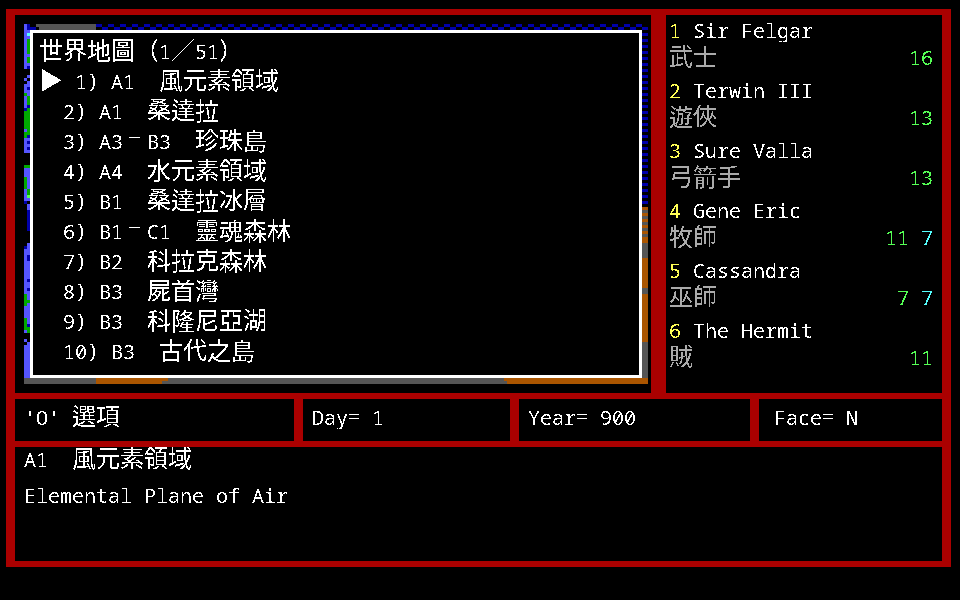

地圖冊與圖例
珍017 附的地圖冊有 38 頁，分三塊：2–5 號城鎮地圖加逐點文字說明（pp.3–10）、 野外地圖 A1–E4 二十幅（pp.11–30）、地下城／迷宮地圖八幅（pp.31–38）。 另外還有摺頁的彩色世界地圖與後面幾十頁的空白地圖紙。
四幅城鎮圖都是 16×16 網格，X、Y 皆自 0 起算，原點在左下角（圖旁標有 y↑、x→）。 這跟遊戲裡的座標一致，也是這個站全部採用的標法。
兩套圖例
手冊的城鎮／地下城用一套，野外用另一套。兩套的「粗實線」意思不一樣 —— 城裡是磚牆，野外是山脈。
城鎮與地下城
| 符號 | 中文 |
|---|---|
| 粗實線 | 磚牆 |
| 細鋸齒線 | 灰牆 |
| 細虛線（密） | 土牆 |
| 圓點線 | 障礙 |
| 線上小方框 | 門 |
| 線上格狀方框 | 柵門 |
| 線上方框加直槓 | 雙向門 |
| 線上方框（另一式） | 單向門 |
| ★ | 出現怪物 |
| 小方點 | 注意訊息 |
| 實心方塊 | 黑暗地區 |
| 格狀小方塊 | 法術失效 |
| ▲ | 法術受限 |
牆分三種材質：磚牆、灰牆、土牆。 這件事在 remake 的第一人稱視圖裡看得到 —— 原版的牆貼圖確實有三組，材質由地圖資料決定。
野外
| 符號 | 中文 |
|---|---|
| 粗實線 | 山脈、島嶼 |
| 細鋸齒線（密） | 叢林、樹林 |
| 雙實線 | 冰河、風域 |
| 菱形串線 | 沼澤、土域 |
| 波浪線 | 海洋、水域 |
| 斜線串 | 沙漠、火域 |
| 小方點 | 注意訊息 |
| 實心方塊 | 黑暗地區 |
| 格狀小方塊 | 法術失效 |
| ▲ | 法術受限 |
這個站的圖例
這個站的地圖不是手冊那幾張，是從原版資料重畫的，所以圖例也是另一套：
- 實牆
- 門（上鎖）
- 屏障：擋路但畫面上看不見
- 事件格
- 吸光的格子
- 攻略提示（編號對應正文）
- 可通行
- 山區（要兩名登山家）
- 森林（要兩名探險家）
- 水域（要水行術）
兩套的對應關係大致是：手冊的「磚牆／灰牆／土牆」在我們這裡一律是實牆（材質不分）， 手冊的「門／柵門／雙向門／單向門」在我們這裡一律是門。 反過來，我們多了一項手冊沒有的「屏障」 —— 擋路但畫面上看不見的牆。 那是從原版資料裡分出來的，手冊沒有對應的符號。
城鎮的入口座標
每幅城鎮圖下方都有一行「區域／表面座標」，記錄該城在野外地圖上的位置：
| 城鎮 | 手冊頁 | 區域 | 表面座標 |
|---|---|---|---|
| 2 號城 亞特蘭汀 Atlantium | p.3 | A4 | 13, 10 |
| 3 號城 桑達拉 Tundara | p.5 | A1 | 12, 3 |
| 4 號城 佛卡尼亞 Vulcania | p.7 | E1 | 3, 4 |
| 5 號城 桑德索巴 Sandsobar | p.9 | E4 | 4, 10 |
1 號城米德格特不在地圖冊裡（地圖冊從 p.3 的 2 號城開始），它的平面圖印在上冊 p.37。 它的位置是 C2 的 (7,3)，來源是原版資料而不是地圖冊。
四座城的設施代號表整理在攻略的五座城那一頁 —— 那是原書把英文與中文並列的部分，也是官方譯名的主要來源。
地下城那八幅圖是空白的
手冊 pp.31–38 有八幅 16×16 的地下城圖，但每頁底部的「區域：＿＿ 表面座標：X＝＿＿ Y＝＿＿」 在原書上就是空白的 —— 那是留給玩家自己填的。
所以那八幅圖沒辦法從手冊本身判斷各自是哪一座地下城。要對上得靠別的線索：
版面結構特徵與 MAP.DAT 解出來的實際地圖逐格比對。這件事本專案還沒做，
所以這個站的地下城那一頁沒有格位圖，只有地表入口。
空白地圖紙與符號
手冊後半（pp.39–65）是一大批空白與半空白的地圖紙，附錄三明講是給玩家自己畫的。 其中 pp.43–46 是全空白的格線頁。
那些頁上有兩種記號的意思到現在還沒解出來：
| 記號 | 狀態 |
|---|---|
| ▲ 實心小三角 | 未知。成片出現，常見於外圍走道或整排小格 |
| ● 實心小方點 | 未知。多出現在大房間或開闊區域 |
沒有圖例就不從外觀猜。 把 ▲ 寫成「陷阱」、把 ● 寫成「水域」都很容易， 但那是編出來的，不是查出來的。
順帶一提，圖上散布的小十字／星狀斑點不是地圖符號 —— 它們在完全空白的 pp.43–46 上同樣出現而且位置隨機，是影印與掃描的雜點， 經 JPEG 壓縮與放大插值之後被放大成十字形。
彩色世界地圖
包裝裡另附一張摺頁彩色地圖 Map of the World of Cron，四周有 A–E 欄與 1–4 列的格線索引，
英文地名旁印有中文小字。

掃描解析度不足：多數中文標註在掃描裡只有幾個像素高，放大到 9 倍仍無法辨識筆畫， 所以轉錄時只列能確實辨讀的，其餘一律歸入「無法辨識」清單，不作推測。